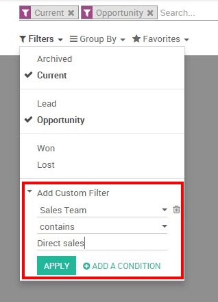

Как менеджеру, вам необходимо постоянно контролировать эффективность своей команды, это поможет вам принимать решения необходимые вашей компании. Поэтому Отчеты раздела Продажи представляет собой очень важный инструмент, который поможет вам лучше понять, где сильные и слабые стороны и возможности вашей компании, показывая вам тенденции и прогнозы для ключевых показателей, таких как Количество возможностей и ожидаемый доход с течением времени, скорость закрытия сделок по команде продаж или продолжительность цикла продаж для данного продукта или услуги.
Помимо этих очевидных показателей последовательности отслеживания продаж, есть некоторые другие KPI, которые могут быть очень ценными для вашей компании, когда дело доходит до оценки успеха менеджеров по продажам.
Проверка воронки продаж
У вас будет доступ к производительности воронки продаж из модуля Продажи, нажав на . По умолчанию отчет группирует все ваши возможности по этапам (подробнее о том, как создавать и настраивать этап, читайте Настройте и организуйте свою воронку продаж) и ожидаемые доходы за текущий месяц. Этот отчет идеально подходит для Менеджера по продажам, чтобы периодически просматривать каналы сбыта в соответствующих отделах продаж. Просто, обратившись к этому базовому отчету, вы можете получить краткий обзор фактической эффективности продаж.
Вы можете добавить в отчет много дополнительных данных, щелкнув значок measure, например:
Ожидаемый доход.
Превышенные предельные сроки.
Задержка назначения ответственного (среднее время между созданием Лида и назначением ответственного менеджера).
Задержка для закрытия (среднее время между назначением ответственного и закрытием сделки).
Количество взаимодействий при каждой возможности.
и т.п.
Совет
Нажимая на значки + и -, вы можете развернуть вверх и вниз свой отчет, чтобы изменить способ отображения вашей информации. Например, если я хочу видеть ожидаемые доходы от моей команды Direct Sales, мне нужно щелкнуть значок + на вертикальной оси, а затем на Sales Team.
В зависимости от данных, которые вы хотите выделить, вам может потребоваться отображать ваши отчеты в более визуальном виде. Odoo CRM позволяет вам трансформировать отчет одним щелчком, благодаря 3 графическим представлениям: Pie Chart (Круговая диаграмма), Bar Chart (Гистограмма) и Line Chart (Линейная диаграмма). Эти представления доступны через значки, выделенные на скриншоте ниже.

Настройка отчетов
Вы можете легко настроить свои аналитические отчеты в зависимости от KPI (см. Терминология Odoo CRM), к которым вы хотите получить доступ. Для этого используйте Расширенный поиск, расположенный в правой части экрана, щелкнув значок лупы в конце панели поиска. Эта функция позволяет выделить в отчете только выбранные данные. Опция filters очень полезна для отображения некоторых категорий возможностей, в то время как опция Group by улучшает читабельность ваших отчетов в соответствии с вашими потребностями. Обратите внимание, что вы можете фильтровать и группировать по любому полю из вашего CRM, что делает настройку очень гибкой и мощной.
Совет
Вы можете сохранить и повторно использовать любой настроенный фильтр, нажав Favorites (Избранное) в окне Расширенного поиска, а затем на Сохранить текущий поиск. Сохраненный фильтр будет доступен из меню Favorites (Избранное).
Вот несколько примеров настраиваемых отчетов, которые вы можете использовать для мониторинга ваших продаж:
Оцените текущую воронку продаж каждого из ваших продавцов
Для отчета по анализу воронки продаж убедитесь, что в раскрывающемся списке Measures выбрана опция Ожидаемый доход. Затем используйте значки + и - и добавьте Salesperson и Stage в вашу вертикальную ось и отфильтруйте желаемого продавца. Затем щелкните значок graph view, чтобы отобразить визуальное представление ваших продавцов по этапам. Этот пользовательский отчет позволяет легко просмотреть действия продавцов по продажам.
Прогноз ежемесячного дохода от продаж
Чтобы прогнозировать ежемесячный доход и оценивать краткосрочные показатели ваших команд, вам необходимо совместить два важных показателя: ожидаемый доход и ожидаемое закрытие.
При создании отчета по вашей воронки продаж убедитесь, что в выпадающем списке Measures выбрана опция Ожидаемый доход. Затем кликните + на вертикальной оси и выберите Команда продаж. Затем на горизонтальной оси щелкните значок + и выберите Ожидаемое закрытие.

Совет
Чтобы ваши прогнозы были точными и релевантными, убедитесь, что ваши продавцы правильно настроили ожидаемое закрытие и ожидаемый доход для каждой из своих возможностей